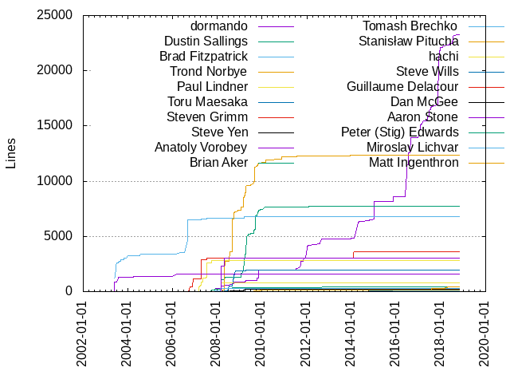
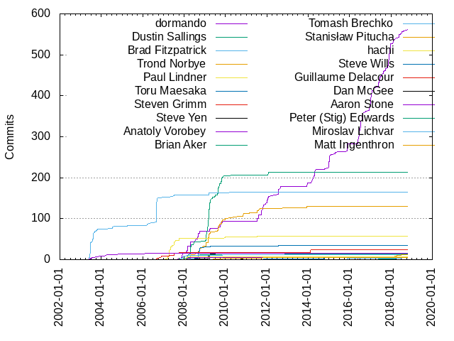

Authors
| Author | Commits (%) | + lines | - lines | First commit | Last commit | Age | Active days | # by commits |
|---|
| dormando | 561 (37.25%) | 23251 | 8060 | 2007-09-18 | 2018-10-23 | 4053 days, 13:17:31 | 281 | 1 |
| Dustin Sallings | 214 (14.21%) | 7740 | 3164 | 2007-10-03 | 2012-02-01 | 1581 days, 11:12:06 | 98 | 2 |
| Brad Fitzpatrick | 164 (10.89%) | 6817 | 2083 | 2003-05-27 | 2010-03-20 | 2489 days, 16:17:28 | 65 | 3 |
| Trond Norbye | 130 (8.63%) | 12371 | 7979 | 2008-02-11 | 2012-10-17 | 1710 days, 8:10:31 | 82 | 4 |
| Paul Lindner | 58 (3.85%) | 2804 | 981 | 2007-03-06 | 2010-10-06 | 1310 days, 11:01:09 | 30 | 5 |
| Toru Maesaka | 34 (2.26%) | 1946 | 1522 | 2008-04-28 | 2012-07-11 | 1534 days, 21:24:01 | 27 | 6 |
| Steven Grimm | 25 (1.66%) | 3610 | 1167 | 2006-09-04 | 2014-02-16 | 2721 days, 18:01:32 | 16 | 7 |
| Steve Yen | 15 (1.00%) | 186 | 47 | 2008-04-23 | 2009-07-14 | 446 days, 12:33:01 | 9 | 8 |
| Anatoly Vorobey | 15 (1.00%) | 1575 | 414 | 2003-05-27 | 2006-03-04 | 1011 days, 22:30:11 | 13 | 9 |
| Brian Aker | 14 (0.93%) | 443 | 291 | 2008-02-18 | 2012-12-03 | 1750 days, 9:34:07 | 9 | 10 |
| Tomash Brechko | 12 (0.80%) | 278 | 63 | 2007-11-12 | 2009-11-02 | 720 days, 23:27:00 | 9 | 11 |
| Stanisław Pitucha | 12 (0.80%) | 401 | 11 | 2014-12-13 | 2018-07-01 | 1296 days, 3:31:43 | 9 | 12 |
| hachi | 7 (0.46%) | 809 | 308 | 2007-12-12 | 2007-12-13 | 13:34:28 | 2 | 13 |
| Steve Wills | 6 (0.40%) | 63 | 17 | 2011-10-04 | 2014-07-23 | 1023 days, 5:14:59 | 3 | 14 |
| Guillaume Delacour | 6 (0.40%) | 34 | 10 | 2015-12-06 | 2016-08-01 | 238 days, 22:59:24 | 2 | 15 |
| Dan McGee | 6 (0.40%) | 30 | 31 | 2010-11-02 | 2012-02-03 | 457 days, 15:47:18 | 3 | 16 |
| Aaron Stone | 6 (0.40%) | 3047 | 423 | 2007-12-14 | 2008-04-17 | 124 days, 17:58:50 | 5 | 17 |
| Peter (Stig) Edwards | 5 (0.33%) | 34 | 4 | 2017-05-05 | 2018-06-26 | 416 days, 20:53:13 | 3 | 18 |
| Miroslav Lichvar | 5 (0.33%) | 82 | 3 | 2013-07-02 | 2018-07-10 | 1834 days, 3:29:00 | 4 | 19 |
| Matt Ingenthron | 5 (0.33%) | 174 | 121 | 2009-06-09 | 2011-10-07 | 850 days, 18:48:50 | 5 | 20 |
These didn't make it to the top: Evan Martin, Victor Kirkebo, Eric McConville, Craig Andrews, Chris Goffinet, sergiocarlos, Paul Furtado, Jay Grizzard, Eric Lambert, Daniel Pañeda, Cameron Norman, Calin Iorgulescu, Andrei Nigmatulin, 祁冰, Vadim Pushtaev, Ricky Zhou, Remi Collet, Paolo Borelli, Monty Taylor, Mat Hostetter, Linkerist, Josh Soref, Jean-Francois BUSTARRET, Jay Bonci, Jason CHAN, J. Grizzard, Giovanni Bechis, Evan Miller, Eric Hodel, Doug Porter, David Bremner, Cosimo Streppone, Colin Pitrat, Clint Byrum, Brion Vibber, Antony Dovgal, 伊藤洋也, zhoutai, yuryur, wangkang-xy, theblop, phantom9999, nirvanazc, meteorgan, mdl, mckelvin, liu bo, kenvifire, js, hiracy, githublvv, clark.kang, akisssa, Yongyue Sun, Wing Lian, Vladimir, Torsten Foertsch, Tomas Kalibera, Tim Yardley, Thomas van Gulick, Theo Najim, Ted Schundler, Tao Hui, Steve Peters, Sjon Hortensius, Simon Liu, Sharif Nassar, Saman Barghi, Ryan Tomayko, Ryan T. Dean, Ryan McCullagh, Roman Mueller, River Tarnell, Richard Russo, Qian Li, Peter van Dijk, Paul Querna, Oskari Saarenmaa, Ori Shalev, Nick Frost, Nick, Nathan Neulinger, Nate, Natanael Copa, Miklos Vajna, Mike Dillon, Michael Alan Dorman, Menghan, Maxim Dounin, Mattias Geniar, Matt Fowles Kulukundis, Mathieu CARBONNEAUX, Manish Katiyar, Maksim Zhylinski, Léon Brocard, Lisa Seelye, Keyur, Kenneth Steele, Jørgen Austvik, Juliy V. Chirkov, Jonathan Steinert, Jonathan Bastien-Filiatrault, Jon Jensen, Johan Bergström, Joe Orton, Jeremy Sowden, Jeff Lawson, Jason Titus, Jamie McCarthy, James Cohen, Ian Miell, Iain Wade, Huzaifa Sidhpurwala, Grant Mathews, Gordon Franke, Gleicon Moraes, Gabriel A. Samfira, Fumihiro Ito, Fordy, Filipe Laborde, Fangrui Song, Evan Klitzke, Elizabeth Mattijsen, Eli Bingham, Eiichi Tsukata, Don MacAskill, Dmitry Isaykin, David Schoen, David Phillips, David Oliveira, David Carlier, Dan Christian, Dagobert Michelsen, Clinton Webb, Chen-Yu Tsai, Charmander, Chang Song, CaptTofu, Caleb Shay, Ben Evans, Artur Bergman, Anthony Ryan, Andrey Niakhaichyk, Andrew Glinskiy, Alwayswithme, Alexander Pyhalov, Alex Leone, Adam Thomason, Adam Szkoda, Adam Dixon, Adam Chainz
Only top 20 authors shown
Only top 20 authors shown
| Month | Author | Commits (%) | Next top 5 | Number of authors |
|---|
| 2018-10 | dormando | 2 (100.00% of 2) | | 1 |
| 2018-08 | dormando | 3 (60.00% of 5) | phantom9999, Nick Frost | 3 |
| 2018-07 | dormando | 5 (62.50% of 8) | Stanisław Pitucha, Miroslav Lichvar, Gleicon Moraes | 4 |
| 2018-06 | Vadim Pushtaev | 2 (22.22% of 9) | Peter (Stig) Edwards, Linkerist, dormando, Sjon Hortensius, Charmander | 6 |
| 2018-05 | dormando | 9 (75.00% of 12) | Paul Furtado | 2 |
| 2018-04 | Stanisław Pitucha | 2 (100.00% of 2) | | 1 |
| 2018-03 | dormando | 4 (23.53% of 17) | Stanisław Pitucha, Calin Iorgulescu, Peter (Stig) Edwards, Ori Shalev, Josh Soref | 8 |
| 2018-02 | dormando | 8 (72.73% of 11) | Stanisław Pitucha, Remi Collet, Qian Li | 4 |
| 2018-01 | dormando | 2 (66.67% of 3) | Miroslav Lichvar | 2 |
| 2017-12 | dormando | 26 (92.86% of 28) | Manish Katiyar, Chen-Yu Tsai | 3 |
| 2017-11 | dormando | 16 (94.12% of 17) | David Carlier | 2 |
| 2017-10 | dormando | 13 (92.86% of 14) | Theo Najim | 2 |
| 2017-09 | dormando | 11 (100.00% of 11) | | 1 |
| 2017-08 | dormando | 8 (88.89% of 9) | Giovanni Bechis | 2 |
| 2017-07 | dormando | 8 (88.89% of 9) | J. Grizzard | 2 |
| 2017-06 | dormando | 13 (92.86% of 14) | Stanisław Pitucha | 2 |
| 2017-05 | dormando | 10 (76.92% of 13) | Stanisław Pitucha, Peter (Stig) Edwards | 3 |
| 2017-04 | dormando | 2 (40.00% of 5) | Josh Soref, Fumihiro Ito, David Schoen | 4 |
| 2017-03 | dormando | 1 (100.00% of 1) | | 1 |
| 2017-02 | dormando | 8 (80.00% of 10) | Joe Orton, Grant Mathews | 3 |
| 2017-01 | dormando | 27 (96.43% of 28) | Juliy V. Chirkov | 2 |
| 2016-12 | dormando | 21 (95.45% of 22) | Craig Andrews | 2 |
| 2016-11 | Alexander Pyhalov | 1 (100.00% of 1) | | 1 |
| 2016-10 | dormando | 4 (66.67% of 6) | akisssa, Nick | 3 |
| 2016-09 | dormando | 1 (50.00% of 2) | Giovanni Bechis | 2 |
| 2016-08 | dormando | 15 (75.00% of 20) | Guillaume Delacour, Craig Andrews, Ben Evans, Adam Chainz | 5 |
| 2016-07 | dormando | 21 (91.30% of 23) | Remi Collet, David Oliveira | 3 |
| 2016-06 | dormando | 30 (83.33% of 36) | Craig Andrews, Ryan McCullagh, Mathieu CARBONNEAUX, Jay Grizzard, J. Grizzard | 6 |
| 2016-05 | dormando | 7 (77.78% of 9) | 祁冰 | 2 |
| 2016-04 | hiracy | 1 (50.00% of 2) | Matt Fowles Kulukundis | 2 |
| 2016-03 | meteorgan | 1 (50.00% of 2) | Eiichi Tsukata | 2 |
| 2016-01 | Natanael Copa | 1 (100.00% of 1) | | 1 |
| 2015-12 | Guillaume Delacour | 4 (50.00% of 8) | sergiocarlos, Caleb Shay | 3 |
| 2015-11 | dormando | 6 (60.00% of 10) | zhoutai, Mattias Geniar, Johan Bergström, Alwayswithme | 5 |
| 2015-10 | dormando | 9 (100.00% of 9) | | 1 |
| 2015-09 | dormando | 6 (100.00% of 6) | | 1 |
| 2015-07 | wangkang-xy | 1 (33.33% of 3) | dormando, Yongyue Sun | 3 |
| 2015-05 | kenvifire | 1 (100.00% of 1) | | 1 |
| 2015-04 | dormando | 5 (100.00% of 5) | | 1 |
| 2015-02 | dormando | 3 (60.00% of 5) | Antony Dovgal | 2 |
| 2015-01 | dormando | 27 (93.10% of 29) | githublvv, Saman Barghi | 3 |
| 2014-12 | dormando | 5 (71.43% of 7) | clark.kang, Stanisław Pitucha | 3 |
| 2014-11 | mckelvin | 1 (33.33% of 3) | Oskari Saarenmaa, Mike Dillon | 3 |
| 2014-10 | dormando | 2 (66.67% of 3) | Jason CHAN | 2 |
| 2014-09 | Jay Grizzard | 1 (100.00% of 1) | | 1 |
| 2014-08 | Jay Grizzard | 1 (100.00% of 1) | | 1 |
| 2014-07 | Steve Wills | 4 (57.14% of 7) | Roman Mueller, Menghan, Jason CHAN | 4 |
| 2014-06 | Cameron Norman | 3 (100.00% of 3) | | 1 |
| 2014-05 | dormando | 3 (75.00% of 4) | mdl | 2 |
| 2014-04 | dormando | 30 (96.77% of 31) | Eric McConville | 2 |
| 2014-02 | Steven Grimm | 7 (100.00% of 7) | | 1 |
| 2014-01 | Steven Grimm | 1 (50.00% of 2) | Miroslav Lichvar | 2 |
| 2013-12 | dormando | 10 (71.43% of 14) | 伊藤洋也, Tomas Kalibera, Huzaifa Sidhpurwala, Alex Leone | 5 |
| 2013-11 | Eric McConville | 2 (50.00% of 4) | Andrew Glinskiy, Adam Szkoda | 3 |
| 2013-10 | Wing Lian | 1 (100.00% of 1) | | 1 |
| 2013-07 | Miroslav Lichvar | 2 (100.00% of 2) | | 1 |
| 2013-06 | Sharif Nassar | 1 (100.00% of 1) | | 1 |
| 2013-05 | theblop | 1 (100.00% of 1) | | 1 |
| 2013-02 | Daniel Pañeda | 1 (100.00% of 1) | | 1 |
| 2013-01 | Jeremy Sowden | 1 (50.00% of 2) | Ian Miell | 2 |
| 2012-12 | liu bo | 1 (50.00% of 2) | Brian Aker | 2 |
| 2012-10 | Trond Norbye | 5 (83.33% of 6) | Andrey Niakhaichyk | 2 |
| 2012-09 | dormando | 2 (33.33% of 6) | Trond Norbye, Keyur, Gabriel A. Samfira, Brian Aker | 5 |
| 2012-08 | dormando | 4 (100.00% of 4) | | 1 |
| 2012-07 | dormando | 18 (75.00% of 24) | yuryur, Toru Maesaka, Simon Liu, Maksim Zhylinski, Eric McConville | 7 |
| 2012-05 | Kenneth Steele | 1 (50.00% of 2) | Fordy | 2 |
| 2012-02 | dormando | 1 (25.00% of 4) | Steve Wills, Dustin Sallings, Dan McGee | 4 |
| 2012-01 | dormando | 15 (71.43% of 21) | Dustin Sallings | 2 |
| 2011-12 | dormando | 4 (100.00% of 4) | | 1 |
| 2011-11 | dormando | 2 (100.00% of 2) | | 1 |
| 2011-10 | dormando | 11 (73.33% of 15) | Steve Wills, Nate, Miklos Vajna, Matt Ingenthron | 5 |
| 2011-09 | dormando | 12 (75.00% of 16) | Daniel Pañeda, Trond Norbye, Dustin Sallings | 4 |
| 2011-08 | dormando | 8 (57.14% of 14) | Trond Norbye, Gordon Franke, Clint Byrum | 4 |
| 2011-07 | dormando | 7 (46.67% of 15) | Trond Norbye, Dan McGee, nirvanazc | 4 |
| 2011-03 | Trond Norbye | 2 (100.00% of 2) | | 1 |
| 2011-01 | Dagobert Michelsen | 1 (100.00% of 1) | | 1 |
| 2010-11 | Trond Norbye | 7 (70.00% of 10) | Dan McGee | 2 |
| 2010-10 | Paul Lindner | 1 (100.00% of 1) | | 1 |
| 2010-08 | Trond Norbye | 1 (100.00% of 1) | | 1 |
| 2010-06 | Trond Norbye | 1 (100.00% of 1) | | 1 |
| 2010-04 | Jon Jensen | 1 (50.00% of 2) | Dustin Sallings | 2 |
| 2010-03 | Brad Fitzpatrick | 1 (100.00% of 1) | | 1 |
| 2010-02 | Trond Norbye | 2 (50.00% of 4) | Jørgen Austvik, Dustin Sallings | 3 |
| 2010-01 | Trond Norbye | 1 (50.00% of 2) | Paul Lindner | 2 |
| 2009-12 | Paul Lindner | 4 (57.14% of 7) | Trond Norbye | 2 |
| 2009-11 | Dustin Sallings | 5 (35.71% of 14) | dormando, Trond Norbye, Matt Ingenthron, Tomash Brechko | 5 |
| 2009-10 | dormando | 12 (34.29% of 35) | Dustin Sallings, Trond Norbye, Colin Pitrat, Monty Taylor, Jonathan Steinert | 8 |
| 2009-09 | Dustin Sallings | 10 (62.50% of 16) | Trond Norbye, Vladimir, Dmitry Isaykin | 4 |
| 2009-08 | Trond Norbye | 13 (41.94% of 31) | Dustin Sallings, dormando, Ryan Tomayko, Monty Taylor, Matt Ingenthron | 8 |
| 2009-07 | Dustin Sallings | 10 (76.92% of 13) | Steve Yen, Cosimo Streppone, Adam Thomason | 4 |
| 2009-06 | Dustin Sallings | 3 (50.00% of 6) | Trond Norbye, Matt Ingenthron, Mat Hostetter | 4 |
| 2009-05 | Dustin Sallings | 7 (100.00% of 7) | | 1 |
| 2009-04 | Dustin Sallings | 9 (50.00% of 18) | Trond Norbye, dormando, Toru Maesaka, Eric Lambert | 5 |
| 2009-03 | Dustin Sallings | 52 (57.14% of 91) | Trond Norbye, Steve Yen, dormando, Toru Maesaka, Evan Klitzke | 9 |
| 2009-02 | Dustin Sallings | 24 (88.89% of 27) | Victor Kirkebo, Trond Norbye, Steve Yen | 4 |
| 2009-01 | Dustin Sallings | 18 (52.94% of 34) | Trond Norbye, Steve Yen, Victor Kirkebo, Toru Maesaka | 5 |
| 2008-12 | Trond Norbye | 2 (66.67% of 3) | Victor Kirkebo | 2 |
| 2008-11 | Trond Norbye | 3 (100.00% of 3) | | 1 |
| 2008-10 | Toru Maesaka | 9 (39.13% of 23) | Trond Norbye, Brad Fitzpatrick, Eric Lambert, Dustin Sallings | 5 |
| 2008-09 | Toru Maesaka | 11 (35.48% of 31) | dormando, Brian Aker, Trond Norbye, Ricky Zhou, Jonathan Bastien-Filiatrault | 6 |
| 2008-08 | Toru Maesaka | 6 (50.00% of 12) | dormando, Trond Norbye | 3 |
| 2008-07 | dormando | 5 (41.67% of 12) | Trond Norbye, Toru Maesaka | 3 |
| 2008-06 | Dustin Sallings | 8 (47.06% of 17) | dormando, Tomash Brechko, Cosimo Streppone | 4 |
| 2008-05 | Trond Norbye | 1 (33.33% of 3) | Toru Maesaka, Dustin Sallings | 3 |
| 2008-04 | Dustin Sallings | 8 (47.06% of 17) | Trond Norbye, Steve Yen, Aaron Stone, Toru Maesaka | 5 |
| 2008-03 | dormando | 19 (59.38% of 32) | Dustin Sallings, Trond Norbye | 3 |
| 2008-02 | Dustin Sallings | 8 (27.59% of 29) | Trond Norbye, Brian Aker, dormando, Tomash Brechko, Tao Hui | 7 |
| 2007-12 | dormando | 8 (29.63% of 27) | hachi, Tomash Brechko, Dustin Sallings, Aaron Stone, Chris Goffinet | 6 |
| 2007-11 | dormando | 10 (47.62% of 21) | Tomash Brechko, Dustin Sallings, Chris Goffinet, js, David Bremner | 6 |
| 2007-10 | Paul Lindner | 5 (38.46% of 13) | Steven Grimm, Maxim Dounin, Jean-Francois BUSTARRET, Filipe Laborde, Evan Miller | 9 |
| 2007-09 | dormando | 1 (100.00% of 1) | | 1 |
| 2007-08 | Paul Lindner | 2 (50.00% of 4) | Léon Brocard, Evan Miller | 3 |
| 2007-07 | Paul Lindner | 10 (52.63% of 19) | Steven Grimm, Brad Fitzpatrick, Paul Querna | 4 |
| 2007-06 | Paul Lindner | 3 (75.00% of 4) | Steven Grimm | 2 |
| 2007-05 | Paul Lindner | 9 (81.82% of 11) | Brad Fitzpatrick | 2 |
| 2007-04 | Paul Lindner | 16 (72.73% of 22) | Steven Grimm, Paolo Borelli, Tim Yardley, Brad Fitzpatrick | 5 |
| 2007-03 | Paul Lindner | 7 (70.00% of 10) | Thomas van Gulick, Jean-Francois BUSTARRET, Eli Bingham | 4 |
| 2006-12 | Brad Fitzpatrick | 1 (50.00% of 2) | Adam Dixon | 2 |
| 2006-11 | Steven Grimm | 2 (50.00% of 4) | Steve Peters, Iain Wade | 3 |
| 2006-10 | Steven Grimm | 3 (100.00% of 3) | | 1 |
| 2006-09 | Brad Fitzpatrick | 60 (90.91% of 66) | Steven Grimm, Eric Hodel, Nathan Neulinger | 4 |
| 2006-07 | Brad Fitzpatrick | 1 (100.00% of 1) | | 1 |
| 2006-05 | River Tarnell | 1 (50.00% of 2) | Brad Fitzpatrick | 2 |
| 2006-04 | Brad Fitzpatrick | 2 (66.67% of 3) | Torsten Foertsch | 2 |
| 2006-03 | Brad Fitzpatrick | 3 (60.00% of 5) | Artur Bergman, Anatoly Vorobey | 3 |
| 2006-01 | Brad Fitzpatrick | 1 (100.00% of 1) | | 1 |
| 2005-08 | Elizabeth Mattijsen | 1 (100.00% of 1) | | 1 |
| 2005-05 | Peter van Dijk | 1 (50.00% of 2) | Jeff Lawson | 2 |
| 2005-04 | Jay Bonci | 1 (33.33% of 3) | Don MacAskill, Brad Fitzpatrick | 3 |
| 2005-01 | Ted Schundler | 1 (25.00% of 4) | Lisa Seelye, David Phillips, Brad Fitzpatrick | 4 |
| 2004-12 | Doug Porter | 2 (100.00% of 2) | | 1 |
| 2004-11 | Anatoly Vorobey | 1 (100.00% of 1) | | 1 |
| 2004-09 | Andrei Nigmatulin | 3 (75.00% of 4) | Anatoly Vorobey | 2 |
| 2004-08 | Brad Fitzpatrick | 1 (100.00% of 1) | | 1 |
| 2004-07 | Brad Fitzpatrick | 3 (75.00% of 4) | Michael Alan Dorman | 2 |
| 2004-05 | Jay Bonci | 1 (100.00% of 1) | | 1 |
| 2004-04 | Brad Fitzpatrick | 2 (66.67% of 3) | Anatoly Vorobey | 2 |
| 2004-03 | Anatoly Vorobey | 2 (100.00% of 2) | | 1 |
| 2004-02 | Jason Titus | 1 (50.00% of 2) | Evan Martin | 2 |
| 2003-12 | Anatoly Vorobey | 2 (66.67% of 3) | Brad Fitzpatrick | 2 |
| 2003-10 | Brad Fitzpatrick | 3 (50.00% of 6) | Ryan T. Dean, Richard Russo, Brion Vibber | 4 |
| 2003-09 | Brad Fitzpatrick | 6 (75.00% of 8) | Evan Martin, Anatoly Vorobey | 3 |
| 2003-08 | Brad Fitzpatrick | 15 (75.00% of 20) | Evan Martin, Brion Vibber, Anatoly Vorobey | 4 |
| 2003-07 | Brad Fitzpatrick | 8 (72.73% of 11) | Anatoly Vorobey, Jamie McCarthy | 3 |
| 2003-06 | Brad Fitzpatrick | 39 (97.50% of 40) | Anatoly Vorobey | 2 |
| 2003-05 | Brad Fitzpatrick | 3 (60.00% of 5) | Anatoly Vorobey | 2 |
| Year | Author | Commits (%) | Next top 5 | Number of authors |
|---|
| 2018 | dormando | 34 (49.28% of 69) | Stanisław Pitucha, Peter (Stig) Edwards, Paul Furtado, Calin Iorgulescu, Vadim Pushtaev | 19 |
| 2017 | dormando | 143 (89.94% of 159) | Stanisław Pitucha, Theo Najim, Peter (Stig) Edwards, Manish Katiyar, Juliy V. Chirkov | 15 |
| 2016 | dormando | 99 (79.84% of 124) | Craig Andrews, 祁冰, Guillaume Delacour, meteorgan, hiracy | 21 |
| 2015 | dormando | 57 (75.00% of 76) | Guillaume Delacour, sergiocarlos, Antony Dovgal, zhoutai, wangkang-xy | 14 |
| 2014 | dormando | 40 (57.97% of 69) | Steven Grimm, Steve Wills, Cameron Norman, Jay Grizzard, Jason CHAN | 16 |
| 2013 | dormando | 10 (38.46% of 26) | Miroslav Lichvar, Eric McConville, 伊藤洋也, theblop, Wing Lian | 15 |
| 2012 | dormando | 40 (57.97% of 69) | Dustin Sallings, Trond Norbye, Brian Aker, yuryur, liu bo | 18 |
| 2011 | dormando | 44 (63.77% of 69) | Trond Norbye, Daniel Pañeda, Dan McGee, nirvanazc, Steve Wills | 13 |
| 2010 | Trond Norbye | 12 (54.55% of 22) | Dan McGee, Paul Lindner, Dustin Sallings, Jørgen Austvik, Jon Jensen | 7 |
| 2009 | Dustin Sallings | 159 (53.18% of 299) | Trond Norbye, dormando, Steve Yen, Paul Lindner, Matt Ingenthron | 25 |
| 2008 | dormando | 50 (27.47% of 182) | Dustin Sallings, Trond Norbye, Toru Maesaka, Brian Aker, Brad Fitzpatrick | 15 |
| 2007 | Paul Lindner | 52 (39.39% of 132) | dormando, Steven Grimm, Tomash Brechko, Dustin Sallings, hachi | 22 |
| 2006 | Brad Fitzpatrick | 69 (79.31% of 87) | Steven Grimm, Eric Hodel, Torsten Foertsch, Steve Peters, River Tarnell | 11 |
| 2005 | Brad Fitzpatrick | 2 (20.00% of 10) | Ted Schundler, Peter van Dijk, Lisa Seelye, Jeff Lawson, Jay Bonci | 9 |
| 2004 | Brad Fitzpatrick | 6 (30.00% of 20) | Anatoly Vorobey, Andrei Nigmatulin, Doug Porter, Michael Alan Dorman, Jay Bonci | 8 |
| 2003 | Brad Fitzpatrick | 75 (80.65% of 93) | Anatoly Vorobey, Evan Martin, Brion Vibber, Ryan T. Dean, Richard Russo | 7 |
| Domains | Total (%) |
|---|
| rydia.net | 561 (37.25%) |
|---|
| spy.net | 214 (14.21%) |
|---|
| danga.com | 169 (11.22%) |
|---|
| gmail.com | 149 (9.89%) |
|---|
| sun.com | 96 (6.37%) |
|---|
| hi5.com | 52 (3.45%) |
|---|
| torum.net | 33 (2.19%) |
|---|
| pobox.com | 17 (1.13%) |
|---|
| facebook.com | 17 (1.13%) |
|---|
| tangent.org | 14 (0.93%) |
|---|